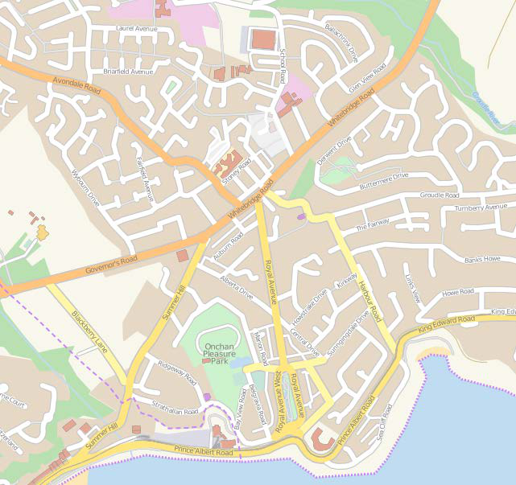
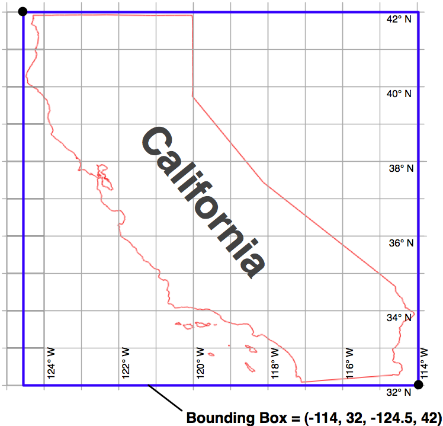
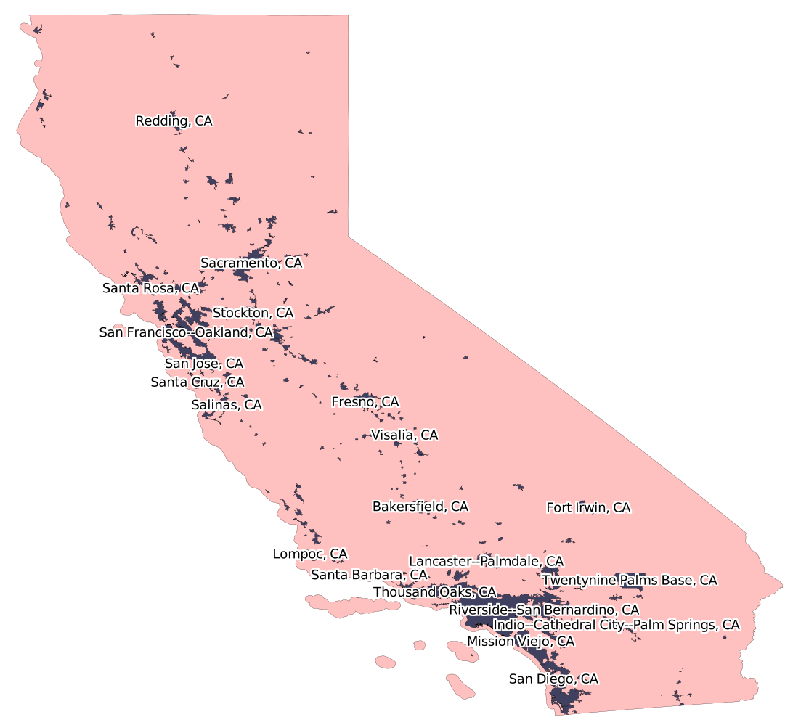
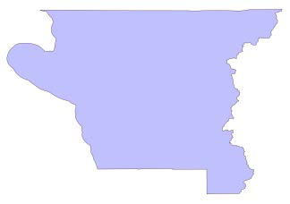
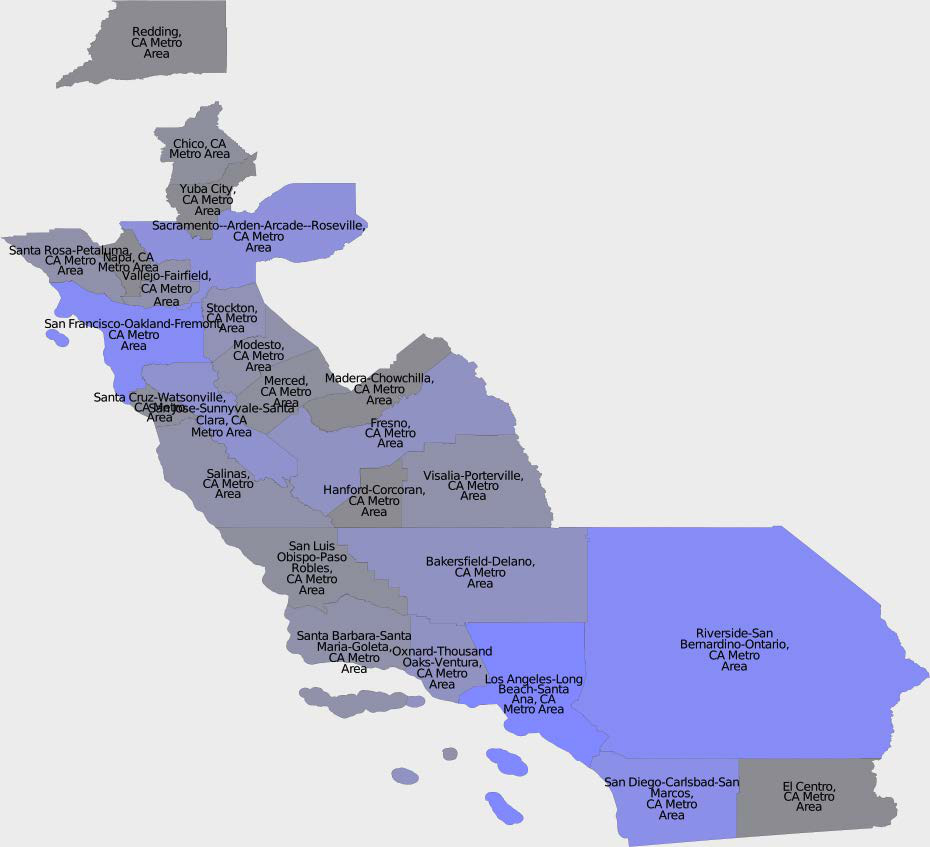
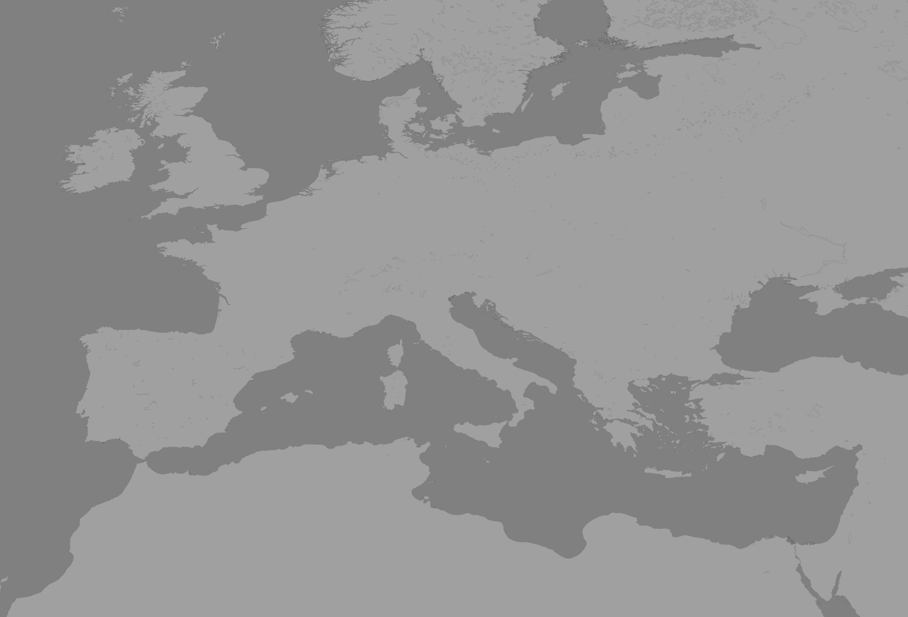
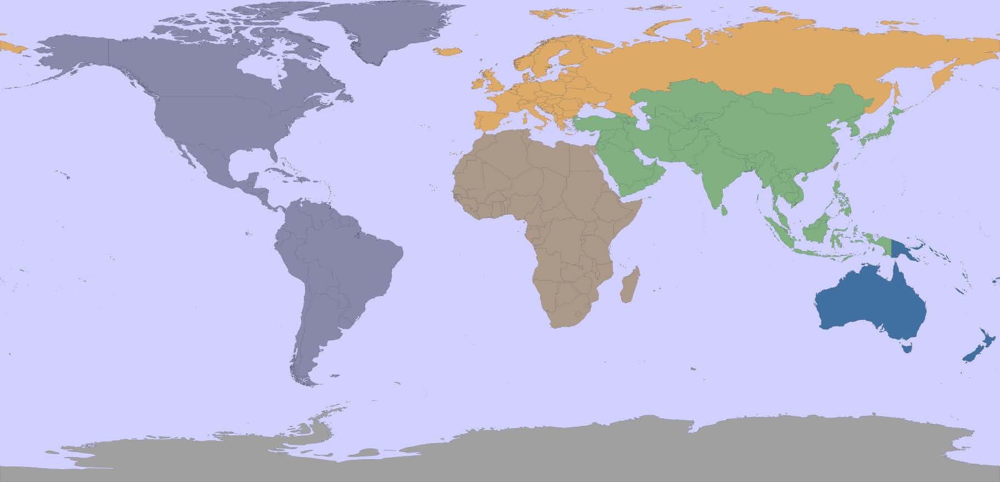

矢量格式的地理空间数据来源#
Sources of geospatial data in vector format
基于矢量的地理空间数据将物理特征表示为点、线和多边形的集合。通常，这些特征将具有与之关联的元数据。在本节中，我们将介绍一些主要的免费矢量格式地理空间数据来源。
Vector-based geospatial data represents physical features as collections of points, lines, and polygons. Often, these features will have metadata associated with them. In this section, we will look at some of the major sources of free vector-format geospatial data.
OpenStreetMap#
OpenStreetMap
OpenStreetMap (http://openstreetmap.org) 是一个供人们协作创建和编辑地理空间数据的网站。它自称是“由像您这样的人制作的可免费编辑的全球地图”。
以下屏幕截图显示了马恩岛昂肯的街道地图的一部分，该地图基于 OpenStreetMap 的数据：
{kind=link}
OpenStreetMap (http://openstreetmap.org) is a website where people can collaborate to create and edit geospatial data. It describes itself as a “free editable map of the whole world made by people like you.”
The following screenshot shows a portion of a street map for Onchan, Isle of Man, based on data from OpenStreetMap:
数据格式#
Data format
OpenStreetMap 不使用 Shapefile 等标准格式来存储数据。相反，它开发了自己的基于 XML 的格式，用于以节点（单个点）、路径（定义一条线的点序列）、区域（表示多边形的封闭路径）和关系（其他元素的集合）的形式表示地理空间数据。任何元素（节点、路径或关系）都可以具有与其关联的多个标签，这些标签提供有关该元素的其他信息。
以下是 OpenStreetMap XML 数据的示例：
<osm>
<node id="603279517" lat="-38.1456457"
lon="176.2441646".../>
<node id="603279518" lat="-38.1456583"
lon="176.2406726".../>
<node id="603279519" lat="-38.1456540"
lon="176.2380553".../>
...
<way id="47390936"...>
<nd ref="603279517"/>
<nd ref="603279518"/>
<nd ref="603279519"/>
<tag k="highway" v="residential"/>
<tag k="name" v="York Street"/>
</way>
...
<relation id="126207"...>
<member type="way" ref="22930719" role=""/>
<member type="way" ref="23963573" role=""/>
<member type="way" ref="28562757" role=""/>
<member type="way" ref="23963609" role=""/>
<member type="way" ref="47475844" role=""/>
<tag k="name" v="State Highway 30A"/>
<tag k="ref" v="30A"/>
<tag k="route" v="road"/>
<tag k="type" v="route"/>
</relation>
</osm>
OpenStreetMap does not use a standard format such as shapefiles to store its data. Instead, it has developed its own XML-based format for representing geospatial data in the form of nodes (single points), ways (sequences of points that define a line), areas (closed ways that represent polygons), and relations (collections of other elements). Any element (node, way, or relation) can have a number of tags associated with it that provide additional information about the element.
Following is an example of how the OpenStreetMap XML data looks:
<osm>
<node id="603279517" lat="-38.1456457"
lon="176.2441646".../>
<node id="603279518" lat="-38.1456583"
lon="176.2406726".../>
<node id="603279519" lat="-38.1456540"
lon="176.2380553".../>
...
<way id="47390936"...>
<nd ref="603279517"/>
<nd ref="603279518"/>
<nd ref="603279519"/>
<tag k="highway" v="residential"/>
<tag k="name" v="York Street"/>
</way>
...
<relation id="126207"...>
<member type="way" ref="22930719" role=""/>
<member type="way" ref="23963573" role=""/>
<member type="way" ref="28562757" role=""/>
<member type="way" ref="23963609" role=""/>
<member type="way" ref="47475844" role=""/>
<tag k="name" v="State Highway 30A"/>
<tag k="ref" v="30A"/>
<tag k="route" v="road"/>
<tag k="type" v="route"/>
</relation>
</osm>
获取和使用 OpenStreetMap 数据#
Obtaining and using OpenStreetMap data
您可以通过以下三种方式从OpenStreetMap获取地理空间数据：
您可以使用OpenStreetMap API下载您感兴趣的数据子集。
您可以下载整个OpenStreetMap数据库，称为Planet.osm，并在本地处理。请注意，这是一个多吉字节的下载。
您可以利用一些镜像站点，这些站点提供了经过精心打包的小块OpenStreetMap数据，并转换为其他数据格式。例如，您可以按州逐个下载北美的数据，格式包括Shapefile等多种可用格式。
让我们仔细看看这三种选择。
You can obtain geospatial data from OpenStreetMap in one of following three ways:
You can use the OpenStreetMap API to download a subset of the data you are interested in.
You can download the entire OpenStreetMap database, called Planet.osm, and process it locally. Note that this is a multi-gigabyte download.
You can make use of one of the mirror sites that provide OpenStreetMap data nicely packaged into smaller chunks and converted into other data formats. For example, you can download the data for North America on a state-by-state basis, in one of several available formats, including shapefiles.
Let’s take a closer look at each of these three options.
OpenStreetMap API#
The OpenStreetMap API
通过使用OpenStreetMap API (http://wiki.openstreetmap.org/wiki/API)，您可以通过以下三种方式下载选定的数据：
您可以指定一个 边界框 ，定义最小和最大经纬度值，如下图所示：
API将返回所有完全或部分位于指定边界框内的元素（节点、道路和关系）。
您可以请求一组 更改集 ，即对地图应用的更改。这样会返回在给定时间段内所做的所有更改，您可以选择针对整个地图或仅针对给定边界框内的元素进行获取。
您可以通过ID下载特定元素，或下载与指定元素相关联的所有元素（例如，属于给定关系的所有元素）。
{kind=link}
OpenStreetMap提供了一个名为 OsmApi 的Python模块，简化了访问OpenStreetMap API的过程。有关该模块的更多信息，请访问 http://wiki.openstreetmap.org/wiki/PythonOsmApi。
Using the OpenStreetMap API (http://wiki.openstreetmap.org/wiki/API), you can download selected data from the OpenStreetMap database in one of following three ways:
You can specify a bounding box defining the minimum and maximum longitude and latitude values, as shown in the following screenshot:
The API will return all of the elements (nodes, ways, and relations), which are completely or partially inside the specified bounding box.
You can ask for a set of changesets which have been applied to the map. This returns all the changes made over a given time period, either for the entire map or just for the elements within a given bounding box.
You can download a specific element by ID, or all the elements which are associated with a specified element (for example, all elements belonging to a given relation).
OpenStreetMap provides a Python module called OsmApi, which makes it easy to access the OpenStreetMap API. More information about this module can be found at http://wiki.openstreetmap.org/wiki/PythonOsmApi.
Planet.osm#
Planet.osm
如果您选择下载整个OpenStreetMap数据库以便在本地计算机上处理，首先需要下载整个Planet.osm数据库。该数据库有两种格式可供选择：一种是包含OpenStreetMap数据库中所有节点、道路和关系的压缩XML格式文件，另一种是名为PBF的特殊二进制格式，包含相同的信息，但体积较小且读取速度更快。
备注
PBF格式正在逐步取代XML作为首选数据格式；各种语言的库（包括Python）都提供了用于读取和写入PBF文件的工具。
如果您选择XML格式，Planet.osm数据库的大小约为23 GB；如果选择PBF格式，则约为18 GB。您可以从 http://planet.openstreetmap.org 下载这两种格式。
Planet.osm数据库的完整转储每周更新一次，但会定期生成“差异”文件，您可以使用这些差异文件来更新本地的Planet.osm数据库，而无需每次都下载整个数据库。每日的差异文件在压缩后约为40 MB。
If you choose to download the entire OpenStreetMap database for processing on your local computer, you will first need to download the entire Planet.osm database. This database is available in two formats: a compressed XML-format file containing all the nodes, ways, and relations in the OpenStreetMap database, or a special binary format called PBF that contains the same information but is smaller and faster to read.
备注
PBF is replacing XML as the preferred data format; libraries for reading and writing PBF files are available for various languages, including Python.
The Planet.osm database is currently 23 GB in size if you download it in XML format, or 18 GB if you download it in PBF format. Both formats can be downloaded from http://planet.openstreetmap.org.
The entire dump of the Planet.osm database is updated weekly, but regular “diffs” are produced which you can use to update your local copy of the Planet.osm database without having to download the entire database each time. The daily diffs are approximately 40 MB when they have been compressed.
镜像站点和摘录#
Mirror sites and extracts
由于下载文件的体积庞大，Planet.osm 建议您使用镜像站点，而不是直接从其服务器下载。还提供了区域提取文件，允许您下载特定区域的数据，而非整个世界的数据。这些镜像站点和提取文件由第三方维护；有关URL的完整列表，请参见 http://wiki.openstreetmap.org/wiki/Planet.osm 。
请注意，这些提取文件通常会在镜像站点以替代格式提供，包括shapefile和直接的数据库转储。
Because of the size of the downloads, Planet.osm recommends that you use a mirror site rather than downloading it directly from their servers. Extracts are also provided, which allow you to download the data for a given area rather than the entire world. These mirror sites and extracts are maintained by third parties; for a list of the URLs, see http://wiki.openstreetmap.org/wiki/Planet.osm.
Note that these extracts are often made available in alternative formats on the mirror sites, including shapefiles and direct database dumps.
使用 OpenStreetMap 数据#
Working with OpenStreetMap data
当您下载Planet.osm时，您将获得一个巨大的文件——如果以XML格式下载，目前文件的大小为250 GB。使用Python处理该文件时，您有两个主要选择：
您可以使用像imposm（http://dev.omniscale.net/imposm.parser）这样的库来读取文件并提取所需的信息。
您可以将数据导入数据库，然后从Python中访问该数据库。
在大多数情况下，您会希望在开始工作之前将数据导入数据库。为此，您可以使用优秀的osm2pgsql工具，它可以从 http://wiki.openstreetmap.org/wiki/Osm2pgsql 下载。osm2pgsql旨在将整个Planet.osm数据导入PostgreSQL数据库，因此进行了高度优化。
一旦将Planet.osm数据导入本地数据库，您就可以使用psycopg2库，如第6章《GIS在数据库中》中所述，从Python程序中访问OpenStreetMap数据。
When you download Planet.osm, you will end up with an enormous file on your hard disk—currently it would be 250 GB if you downloaded the data in XML format. You have two main options for processing this file using Python:
You could use a library such as imposm (http://dev.omniscale.net/ imposm.parser) to read through the file and extract the information you want
You could import the data into a database, and then access that database from Python
In most cases, you will want to import the data into a database before you attempt to work with it. To do this, use the excellent osm2pgsql tool, which is available at http://wiki.openstreetmap.org/wiki/Osm2pgsql. osm2pgsql was created to import the entire Planet.osm data into a PostgreSQL database, and so is highly optimized.
Once you have imported the Planet.osm data into your local database, you can use the psycopg2 library, as described in Chapter 6, GIS in the Database, to access the OpenStreetMap data from your Python programs.
TIGER#
TIGER
美国人口普查局提供了大量的地理空间数据，名为 TIGER（拓扑集成地理编码与参考系统） 。TIGER数据包括有关街道、铁路、河流、湖泊、地理边界以及法律和统计区域（如学区和城市区域）的信息。此外，还提供了单独的制图边界和人口统计文件以供下载。
下图显示了加利福尼亚州的州界和城市区域轮廓，这些数据是从TIGER网站下载的：
{kind=link}
由于TIGER数据是由美国政府生产的，因此它仅包含美国及其保护区（如波多黎各、美属萨摩亚、北马里亚纳群岛、关岛和美属维尔京群岛）的信息。对于这些地区，TIGER是一个非常优秀的地理空间数据源。
The United States Census Bureau have made available a large amount of geospatial data under the name TIGER (Topologically Integrated Geographic Encoding and Referencing System). The TIGER data includes information on streets, railways, rivers, lakes, geographic boundaries, and legal and statistical areas such as school districts, and urban regions. Separate cartographic boundary and demographic files are also available for download.
The following screenshot shows state and urban area outlines for California, based on data downloaded from the TIGER website:
Because it is produced by the US government, TIGER only includes information for the United States and its protectorates (Puerto Rico, American Samoa, the Northern Mariana Islands, Guam, and the US Virgin Islands). For these areas, TIGER is an excellent source of geospatial data.
数据格式#
Data format
直到2006年，美国人口普查局提供的TIGER数据是以一种名为TIGER/Line的自定义文本格式提供的。TIGER/Line文件将每种类型的记录存储在单独的文件中，并且需要使用自定义工具进行处理。幸运的是，OGR支持TIGER/Line文件，如果需要读取这些文件，您可以使用它。
自2007年以来，所有TIGER数据都以shapefile格式提供，这些shapefile文件被称为TIGER/Line shapefiles（有些令人困惑）。
您可以下载包含街道地址范围、地标、普查块、大都市统计区和学区等地理空间数据的最新shapefile。例如，“核心统计区”（Core Based Statistical Area）shapefile包含了每个统计区的轮廓：
{kind=link}
该特征具有以下相关元数据：
ALAND 2606489666.0
AWATER 578526971.0
CBSAFP 18860
CSAFP None
FUNCSTAT S
INTPTLAT +41.7499033
INTPTLON -123.9809983
LSAD M2
MEMI 2
MTFCC G3110
NAME Crescent City, CA
NAMELSAD Crescent City, CA Micropolitan Statistical Area
PARTFLG N
有关这些属性的详细信息可以在TIGER网站的详细文档中找到。
您还可以下载包含人口、房屋数量、中位年龄和种族分布等人口统计数据的shapefile。例如，以下地图根据加利福尼亚州各大都市区的总人口对其进行了着色：
{kind=link}
Up until 2006, the US Census Bureau provided the TIGER data in a custom text-based format called TIGER/Line. TIGER/Line files stored each type of record in a separate file, and required custom tools to process. Fortunately, OGR supports TIGER/Line files should you need to read them.
Since 2007, all TIGER data has been produced in the form of shapefiles, which are (somewhat confusingly) called TIGER/Line shapefiles.
You can download up-to-date shapefiles containing geospatial data such as street address ranges, landmarks, census blocks, metropolitan statistical areas, and school districts. For example, the “Core Based Statistical Area” shapefile contains the outline of each statistical area:
This particular feature has the following metadata associated with it:
ALAND 2606489666.0
AWATER 578526971.0
CBSAFP 18860
CSAFP None
FUNCSTAT S
INTPTLAT +41.7499033
INTPTLON -123.9809983
LSAD M2
MEMI 2
MTFCC G3110
NAME Crescent City, CA
NAMELSAD Crescent City, CA Micropolitan Statistical Area
PARTFLG N
Information on these various attributes can be found in the extensive documentation available at the TIGER website.
You can also download shapefiles which include demographic data such as population, number of houses, median age, and racial breakdown. For example, the following map tints each metropolitan area in California according to its total population:
获取和使用 TIGER 数据#
Obtaining and using TIGER data
TIGER数据文件可以从以下链接下载：
http://www.census.gov/geo/www/tiger/index.html
确保下载技术文档，因为它描述了您可以下载的各种文件，以及与每个要素相关的所有属性。例如，如果您想下载当前的美国城市区数据，您需要查找的shapefile名为tl_2012_us_uac10.shp，其中包含城市或镇的名称以及其面积（以平方米为单位）等信息。
The TIGER datafiles can be downloaded from:
http://www.census.gov/geo/www/tiger/index.html
Make sure that you download the technical documentation, as it describes the various files you can download, and all of the attributes associated with each feature. For example, if you want to download a current set of urban areas for the US, the shapefile you are looking for is called tl_2012_us_uac10.shp and it includes information such as the city or town name and the size in square meters.
Natural Earth#
Natural Earth
Natural Earth (http://www.naturalearthdata.com) 是一个提供公共领域矢量和栅格地图数据的免费网站，提供高分辨率、中等分辨率和低分辨率的地图数据。提供两种类型的矢量地图数据：
文化地图数据：包括国家、省州、城市区和公园轮廓的多边形数据，以及人口密集地区、道路和铁路的点线数据：
{kind=link}
自然地图数据：包括陆地、海岸线、海洋、岛屿、珊瑚礁、河流、湖泊等的多边形和线字符串数据：
{kind=link}
所有这些数据都可以免费下载并在您的地理空间程序中使用，使得Natural Earth网站成为您应用程序的优秀数据来源。
Natural Earth (http://www.naturalearthdata.com) is a website that provides public domain vector and raster map data at high, medium, and low resolutions. Two types of vector map data are provided:
Cultural map data: This includes polygons for country, state or province, urban area, and park outlines, as well as point and line data for populated places, roads, and railways:
Physical map data: This includes polygons and linestrings for land masses, coastlines, oceans, minor islands, reefs, rivers, lakes, and so on:
All of this can be downloaded and used freely in your geospatial programs, making the Natural Earth site an excellent source of data for your application.
数据格式#
Data format
Natural Earth 网站上的所有矢量格式数据都以 shapefile 形式提供。所有数据均使用地理坐标（纬度和经度），并采用标准的 WGS84 坐标系，这使得在您的应用程序中使用这些文件非常方便。
All the vector-format data on the Natural Earth website is provided in the form of shapefiles. All the data is in geographic (latitude and longitude) coordinates, using the standard WGS84 datum, making it very easy to use these files in your own application.
获取和使用自然地球矢量数据#
Obtaining and using Natural Earth vector data
Natural Earth 网站整体非常出色，下载所需文件也非常简单；只需点击主页上的 Get the Data 链接。然后，您可以选择分辨率和所需的数据类型，并选择下载单个 shapefile 或多个 shpaefile 文件打包下载。下载完成后，您可以使用上一章讨论的 Python 库来处理这些 shapefile 的内容。
Natural Earth 网站非常全面；它提供了有关可下载的地理空间数据的详细信息，还设有一个论坛，您可以在其中提出问题并讨论遇到的任何问题。
The Natural Earth site is uniformly excellent, and downloading the files you want is easy; simply click on the Get the Data link on the main page. You can then choose the resolution and the type of data you are looking for, and you can choose to download either a single shapefile, or a number of shapefiles bundled together. Once they are downloaded, you can use the Python libraries discussed in the previous chapter to work with the contents of these shapefiles.
The Natural Earth website is very comprehensive; it includes detailed information about the geospatial data you can download, and a forum where you can ask questions and discuss any problems you may have.
全球、自洽、分层、高分辨率海岸线数据库 (GSHHS)#
Global, self-consistent, hierarchical, high-resolution shoreline database (GSHHS)
美国国家地球物理数据中心（隶属于 NOAA）一直致力于制作全球范围的高质量矢量海岸线数据。该项目的成果 称为全球自一致性、分层高分辨率海岸线数据库（GSHHS），该数据库包含了五种不同分辨率的海岸线、湖泊和河流的详细矢量数据。数据被划分为四个不同的“级别”：海洋边界、湖泊边界、岛屿内湖泊边界和岛屿上的池塘边界。
以下截图显示了从 GSHHS 数据库中提取的欧洲海岸线、湖泊和岛屿：
{kind=link}
GSHHS 是由两个公共领域的地理空间数据库构建而成：世界数据银行 II 包含海岸线、湖泊和河流的数据，而世界矢量海岸线仅提供海岸线数据。由于世界矢量海岸线数据库的数据更为精确，但缺少关于河流和湖泊的信息，因此这两个数据库被结合起来，提供尽可能准确的信息。合并数据库后，作者手动编辑了数据，以确保一致性并消除许多错误。最终结果是一个高质量的全球陆地和水体边界数据库。
备注
有关创建 GSHHS 数据库过程中所使用方法的更多信息，请访问：http://www.soest.hawaii.edu/pwessel/papers/1996/JGR_96/jgr_96.html
The US National Geophysical Data Center (part of the NOAA) have been working on a project to produce high-quality vector shoreline data for the entire world. The resulting database, called the Global self-consistent, hierarchical, high-resolution shoreline database (GSHHS), includes detailed vector data for shorelines, lakes, and rivers at five different resolutions. The data has been broken out into four different “levels”: ocean boundaries, lake boundaries, island-in-lake boundaries, and pond-on-island-in-lake boundaries.
The following screenshot shows European shorelines, lakes, and islands, taken from the GSHHS database:
The GSHHS has been constructed out of two public-domain geospatial databases: the World Data Bank II includes data on coastlines, lakes, and rivers, while the World Vector Shoreline only provides coastline data. Because the World Vector Shoreline database has more accurate data, but lacks information on rivers and lakes, the two databases were combined to provide the most accurate information possible. After merging the databases, the author then manually edited the data to make it consistent and to remove a number of errors. The result is a high-quality database of land and water boundaries worldwide.
备注
More information about the process used to create the GSHHS database can be found at: http://www.soest.hawaii.edu/pwessel/papers/1996/JGR_96/jgr_96.html
数据格式#
Data format
GSHHS 数据库有两种不同的格式可供选择：一种是专门为通用制图工具（Generic Mapping Tools，http://gmt.soest.hawaii.edu）设计的二进制数据格式，另一种是由一系列 shapefile 组成。
备注
通用制图工具（GMT） 是一套用于处理地理空间数据的工具。由于它没有 Python 绑定，因此在本书中我们不会使用 GMT。
如果你下载的是 shapefile 格式的数据，最终会得到 20 个独立的 shapefile，每个 shapefile 代表不同分辨率和级别的组合：
分辨率表示地图细节的程度：
分辨率代码 |
分辨率 |
包含内容 |
|---|---|---|
c |
粗略 |
大于 500 平方公里的特征 |
l |
低 |
大于 100 平方公里的特征 |
i |
中等 |
大于 20 平方公里的特征 |
h |
高 |
大于 1 平方公里的特征 |
f |
完整 |
每个特征 |
级别表示 shapefile 中包含的边界类型：
级别代码 |
包含内容 |
|---|---|
1 |
海洋边界 |
2 |
湖泊边界 |
3 |
岛屿内湖泊边界 |
4 |
岛屿上的池塘边界 |
shapefile 的名称会告诉你所包含数据的分辨率和级别。例如，表示海洋边界的完整分辨率 shapefile 将命名为 GSHHS_f_L1.shp。
每个 shapefile 包含一个单独的图层，图层中包括组成给定边界类型的各种多边形特征。
The GSHHS database is available in two different formats: a binary data format specific to the Generic Mapping Tools (http://gmt.soest.hawaii.edu), and as a series of shapefiles.
备注
Generic Mapping Tools (GMT) is a collection of tools for working with geospatial data. Because they don’t have Python bindings, we won’t be working with GMT in this book.
If you download the data in shapefile format, you will end up with a total of twenty separate shapefiles, one for every combination of resolution and level:
The resolution represents the amount of detail in the map:
Resolution Code |
Resolution |
Includes |
|---|---|---|
c |
Crude |
Features greater than 500 sq.km. |
l |
Low |
Features greater than 100 sq.km. |
i |
Intermediate |
Features greater than 20 sq.km. |
h |
High |
Features greater than 1 sq.km. |
f |
Full |
Every feature |
The level indicates the type of boundaries that are included in the shapefile:
Level Code |
Includes |
|---|---|
1 |
Ocean boundaries |
2 |
Lake boundaries |
3 |
Island-in-lake boundaries |
4 |
Pond-on-island-in-lake boundaries |
The name of the shapefile tells you the resolution and level of the included data. For example, the shapefile for ocean boundaries at full resolution would be named GSHHS_f_L1.shp.
Each shapefile consists of a single layer containing the various polygon features making up the given type of boundary.
获取 GSHHS 数据库#
Obtaining the GSHHS database
GSHHS 的主网站可以在以下地址找到：
http://www.ngdc.noaa.gov/mgg/shorelines/gshhs.html
这些文件同时提供了 GMT 和 shapefile 格式——除非你特别想使用通用制图工具（Generic Mapping Tools），否则你最可能选择下载 shapefile 版本。一旦下载了数据，你可以使用 OGR 以常规方式读取这些文件并提取数据。
The main GSHHS website can be found at:
http://www.ngdc.noaa.gov/mgg/shorelines/gshhs.html
The files are available in both GMT and shapefile format—unless you particularly want to use the Generic Mapping Tools, you will most likely want to download the shapefile version. Once you have downloaded the data, you can use OGR to read the files and extract the data from them in the usual way.
世界边界数据集#
World Borders Dataset
到目前为止，我们所研究的许多数据源都相当复杂。如果您只需要一些简单的矢量数据，覆盖整个世界，那么“世界边界数据集”可能就足够了。虽然某些国家边界存在争议，但世界边界数据集的简洁性使其成为许多基本地理空间应用的一个有吸引力的选择。
以下地图就是使用世界边界数据集生成的：
{kind=link}
本书将在多个章节中广泛使用世界边界数据集。实际上，您已经在《第3章，Python地理空间开发库》中看到过一个示例程序，我们使用Mapnik和世界边界数据集的Shapefile生成了世界地图。
Many of the data sources we have examined so far are rather complex. If all you are looking for is some simple vector data covering the entire world, the World Borders Dataset may be all you need. While some of the country borders are apparently disputed, the simplicity of the World Borders Dataset makes it an attractive choice for many basic geospatial applications.
The following map was generated using the World Borders Dataset:
The World Borders Dataset will be used extensively throughout this book. Indeed, you have already seen an example program in Chapter 3, Python Libraries for Geospatial Development, where we used Mapnik to generate a world map using the World Borders Dataset shapefile.
数据格式#
Data format
世界边界数据集以一个 shapefile 的形式提供，包含一个图层，每个国家对应一个要素。对于每个国家，该要素包含一个或多个多边形，定义了国家的边界，以及有用的属性，包括国家或地区的名称、各种 ISO、FIPS 和联合国代码，用于标识国家、区域和子区域分类、国家的人口、土地面积以及经纬度。
这些不同的代码使得将要素与您自己特定国家的数据匹配变得容易，您还可以使用人口和面积等信息在地图上突出显示不同的国家。例如，上述截图使用 “region” 字段，使用不同的颜色绘制每个地理区域。
The World Borders Dataset is available in the form of a shapefile with a single layer and one feature for each country. For each country, the feature has one or more polygons that define the country’s boundary, along with useful attributes including the name of the country or area, various ISO, FIPS, and UN codes identifying the country, a region and subregion classification, the country’s population, land area, and latitude/longitude.
The various codes make it easy to match the features against your own country- specific data, and you can also use information such as the population and area to highlight different countries on the map. For example, the preceding screenshot uses the “region” field to draw each geographic region using a different color.
获取世界边界数据集#
Obtaining World Borders Dataset
世界边界数据集可以从以下网址下载：
http://thematicmapping.org/downloads/world_borders.php
该网站还提供了有关数据集内容的进一步详细信息，包括指向联合国网站的链接，联合国网站上列出了区域和子区域代码。
The World Borders Dataset can be downloaded from:
http://thematicmapping.org/downloads/world_borders.php
This website also provides further details on the contents of the dataset, including links to the United Nations’ website where the region and subregion codes are listed.